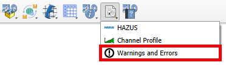

Debug Tool#
Warnings and Errors#
The Warnings and Errors feature provides a system to assist users in debugging data files and identifying data conflicts. To utilize this tool effectively, follow the steps outlined below.
Open the FLO-2D Settings
Perform a debug run
This will automatically trigger the FLO-2D check system performed by the engine FLOPRO.EXE.
Note
The DEBUG.OUT file is created when the user runs the model in Debug mode. This file helps to identify data errors and data conflicts. These error checks do not include any simulation results.
The model will execute, perform the data checks and then automatically shut down. Every time the debug is executed, a new debug file with a timestamp is saved to the project folder.
Click the Error and Warning button to open the import dialog box.
Note
The Errors and Warnings shows all Errors, Conflicts, and Warnings created by the file checking program. All of these boxes can be used to sort and view and pan to cells with potential issues.
DEBUG File#
To import the Debug files, click the Import DEBUG File button. The DEBUG file will have a date and timestamp to track progress.
The import process will include several files that can be used to help users review surface features such as rim elevations, depressed elements and channel – floodplain interface. Click Yes to load the Errors and Warning Dialog box and import the review files.
The FLO-2D Warnings and Errors: DEBUG File will initially appear docked at the bottom but can be freely repositioned. The Errors/Warnings can be filtered by code and grid element using the comboboxes on the top. It is possible to zoom in or out to locate the grid element that contains the Error/Warning.
Current Project#
The Current Project option will create a list of data conflicts. These conflicts are not necessarily errors, they are generated based on the conflict matrix. The conflict matrix is located at:
C:\Users\Public\Documents\FLO-2D Pro Documentation\Handouts\Conflict Matrix.pdfThe FLO-2D Warnings and Errors: Current Project will initially appear docked at the bottom but can be freely repositioned. The Errors/Warnings can be filtered by component type and grid element using the comboboxes on the top. It is possible to zoom in or out to locate the grid element that contains the Error/Warning and copy the cell contents.
Levee Crests#
The final option is Levee Crests validation tool. It is used to review the levees and grid element elevations.
The FLO-2D Warnings and Errors: Levee Crests will initially appear docked at the bottom but can be freely repositioned. The Errors/Warnings can be filtered by grid element using the comboboxes on the top. It is possible to zoom in or out to locate the grid element that contains the Error/Warning and copy the cell contents.
Debug Layers#
The layers show points where there are differences between channel bank and floodplain bank elevations, rim and floodplain inlet elevations, and depressed elements and levee crest elevations. In this example, the layers are grouped using a QGIS standard layer grouping procedure.
Each layer has an attribute table that can be sorted and used to find grid elements that may need elevation edits.